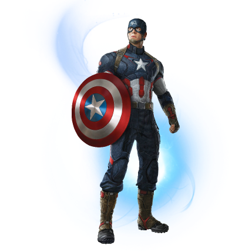

meet the team's new roster

captain america
Captain Steven Grant Rogers is a World War II veteran, a founding member of the Avengers, and Earth's first known superhero. On top of all that, he's first and foremost a good man.